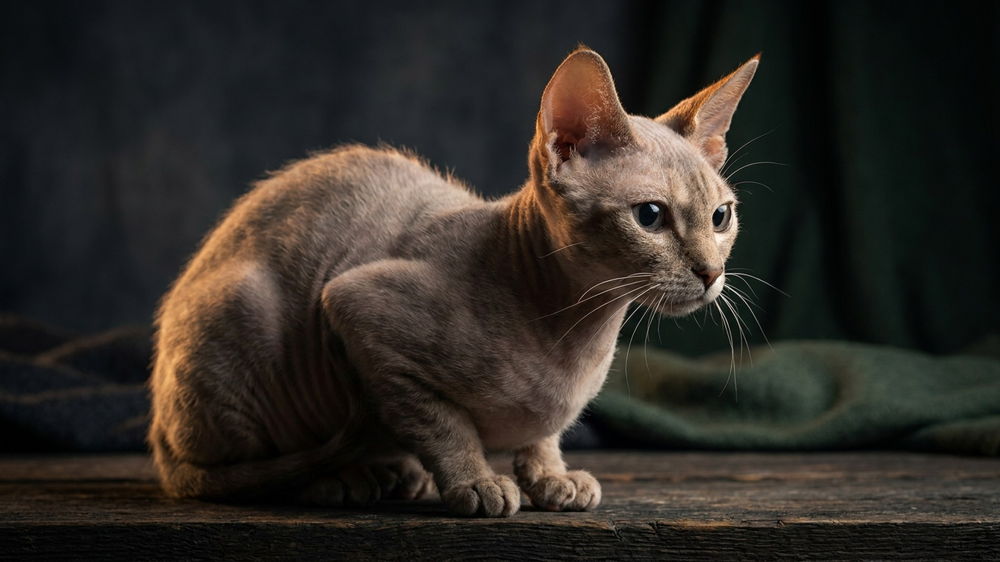

Первый раз видишь минскина и думаешь, что кто-то надел на бесшёрстную кошку маленькие меховые носочки. Лапки короткие, тело почти голое, зато мордочка, ступни и хвост покрыты мягкими пойнтами шерсти. Многие ждут от такой кошки спокойствия и хрупкости, а получают активную «липучку»: минскин прилипчив и требует внимания не меньше обычного сфинкса. Ниже: кто это такой, как с ним жить и что реально нужно для ухода.
🐾 Ваш питомец — минскин?
Заведите профиль в AnimaLife: приложение запомнит породу, возраст и вес и будет подсказывать по уходу именно для неё. Вопросы AI-ветеринару — круглосуточно и бесплатно.
Завести профиль → Завести в MAX →
У вас iPhone? AnimaLife есть в App Store
Минскин появился в США в начале 2000-х: заводчик скрестил манчкина (короткие лапы как результат естественной мутации) со сфинксом (почти голая кожа). Добавили гены девон-рекса и бамбино, чтобы закрепить текстуру шерсти. Получилась кошка с очень короткими конечностями и кожей почти без покрова, но с характерными «пойнтами» (пучками мягкой шерсти на морде, ушах, лапках и хвосте). Порода молодая, официально её признали только TICA, реестр небольшой. Минскинов в мире буквально единицы сотен.
По размеру это некрупная кошка: вес обычно 1,5-3 кг. Кожа тёплая на ощупь, чуть маслянистая, как у сфинкса. Пойнты шерсти придают вид «в варежках»: именно за это многие и влюбляются с первого взгляда.
Минскин - контактная порода. Ходит за хозяином по квартире, забирается на колени при первой возможности и громко напоминает о себе, если его долго игнорировать. Одиночество переносит плохо. Хорошо уживается с другими кошками и спокойными собаками, главное, чтобы был компаньон.
Активности при этом хватает. Короткие лапы не отменяют охотничий инстинкт: кошка бегает, прыгает на невысокие поверхности, азартно гоняет игрушки. Просто прыжки у неё пониже, чем у длинноногих пород, и это надо учитывать в обустройстве дома.
Голая кожа собирает пыль, жир и запахи быстрее, чем шерсть. Минскина нужно протирать мягкой влажной тканью раз в несколько дней: без агрессивного мыла, просто убрать налёт. Купать раз в 2-4 недели достаточно. Уши чистить чаще, чем у обычных кошек: закрытых волосяных каналов нет, загрязнение накапливается активнее.
Кожа чувствительна к температуре. Минскин быстро мёрзнет: в прохладной квартире ниже 20 градусов ему некомфортно. Прямое солнце тоже плохо: незащищённая кожа краснеет. Если кошка выходит на балкон, нужна тень. Детали ухода за кожей в конкретной ситуации лучше уточнить у ветеринара при первом визите.
Лежанки и домики лучше выбирать пониже: прыгать на высокий когтеточный комплекс минскину неудобно. Ступеньки-подставки к дивану или окну - хорошая идея. Кормить стоит исходя из активности: кошка небольшая, но подвижная, поэтому рацион обсудите с ветеринаром (порция рассчитывается индивидуально).
Два популярных заблуждения про породу:
🐾 У вас минскин?
AnimaLife соберёт уход под породу: к каким болезням есть склонность, что проверять по возрасту, чем кормить и когда пора к врачу. Бесплатно, прямо в мессенджере.
Собрать план ухода → Собрать в MAX →
У вас iPhone? AnimaLife есть в App Store
🐾 Понравился разбор?
Подпишитесь на канал — каждый день разбираем по одному тревожному симптому у кошек и собак: что в пределах нормы, а когда пора к врачу. Подпишитесь, чтобы не пропустить разбор, который может спасти здоровье вашего питомца.
Материал носит информационный характер и не заменяет очную консультацию ветеринара.